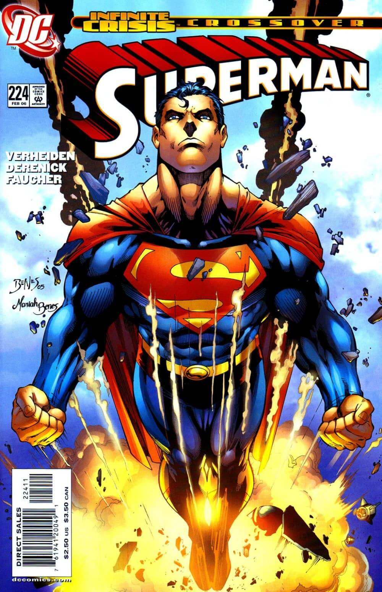
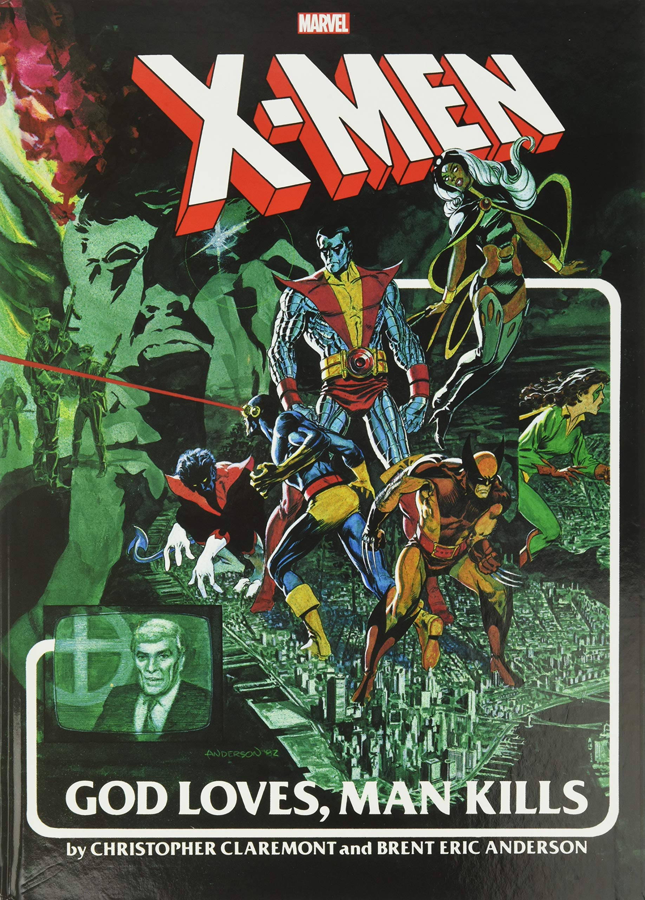

Cómic

The New 52
The New 52 es el reinicio de las historias publicadas por DC Comics. El nombre de New 52 se debe a que fueron renovadas 52 series; aunque más tarde se empezaron a publicar otras. Entre las series renumeradas se encuentran Action Comics y Detective Comics, que habían retenido sus números desde la década de 1930

Dios ama, el hombre mata
X-Men: Dios ama, el hombre mata es un cómic publicado por la editorial Marvel, escrito por Chris Claremont e ilustrado por Brent Eric Anderson. El cómic fue un superventas durante mucho tiempo y fue el cómic adaptado para la película de X-Men 2